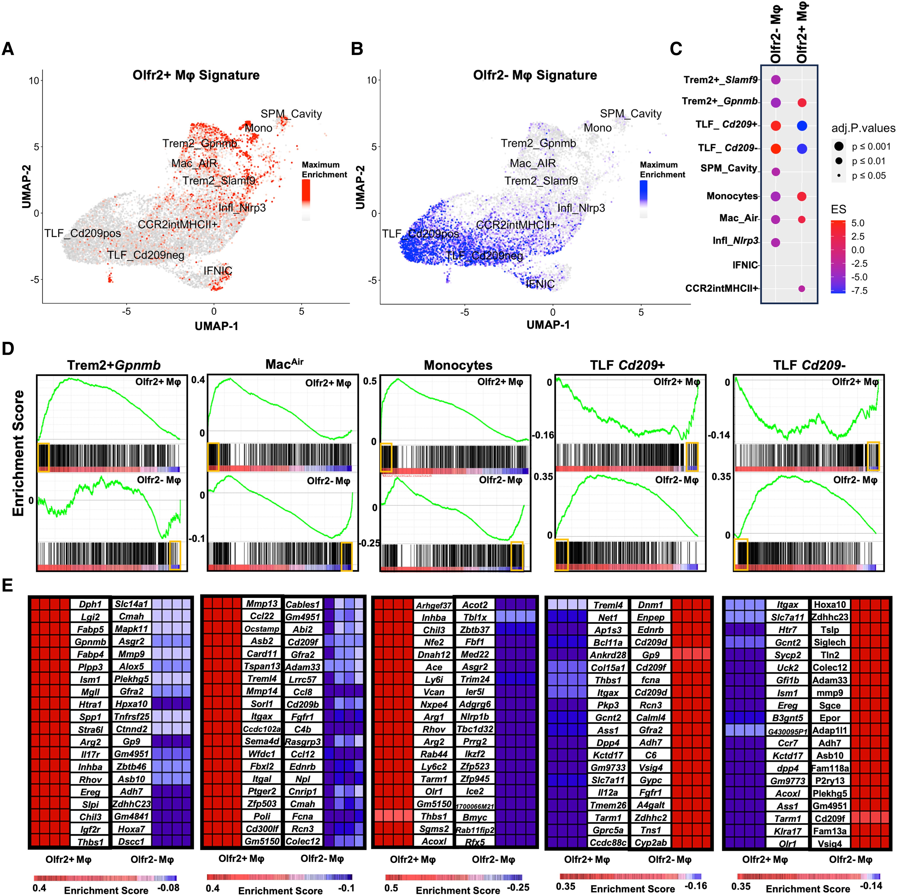
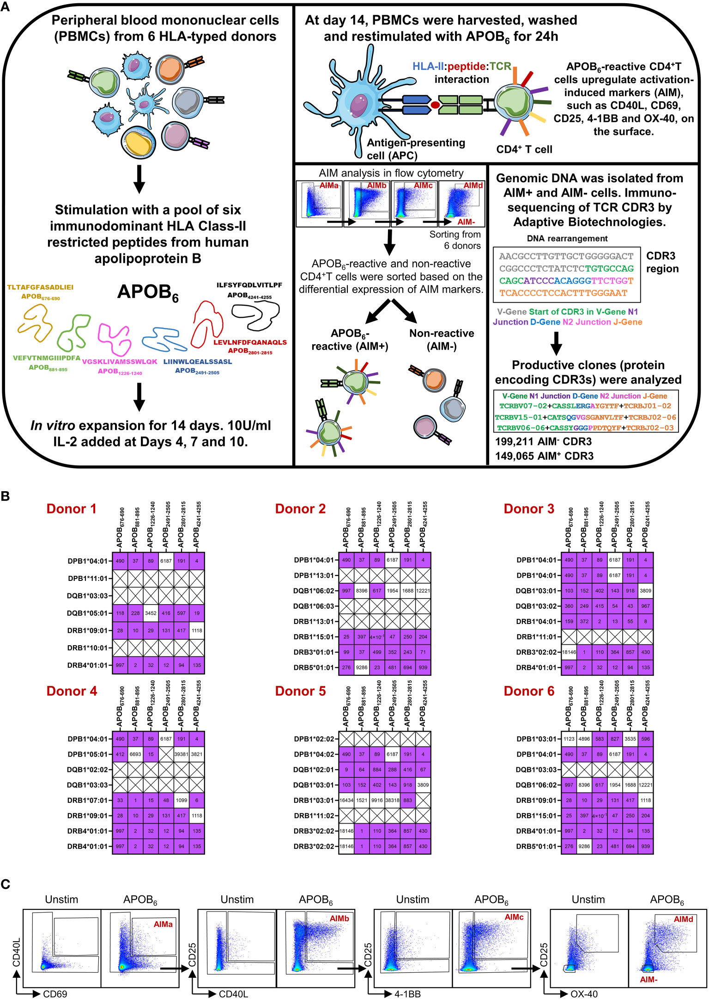
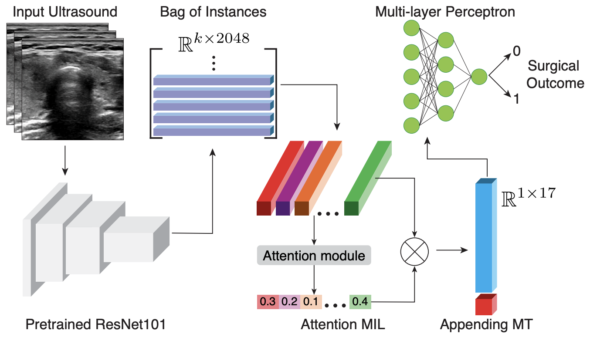
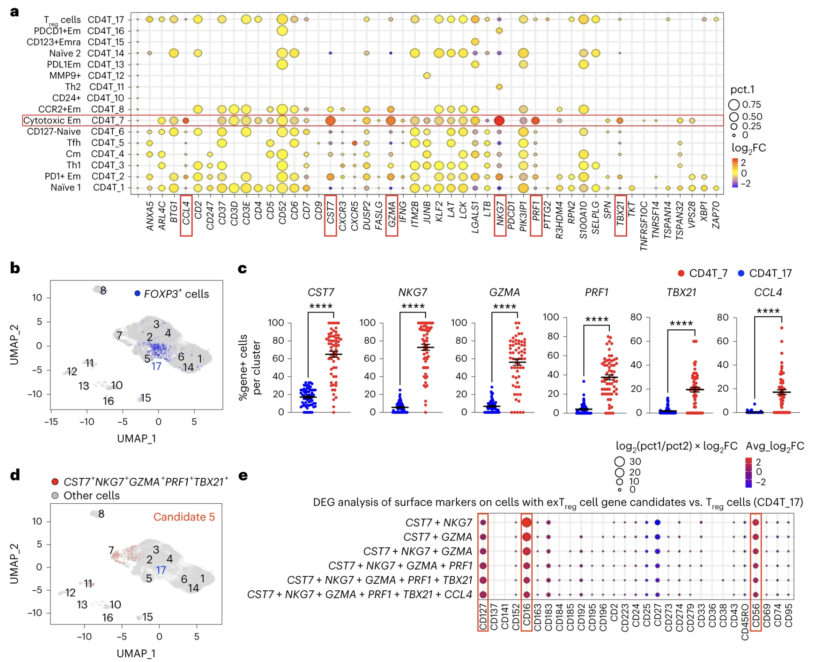
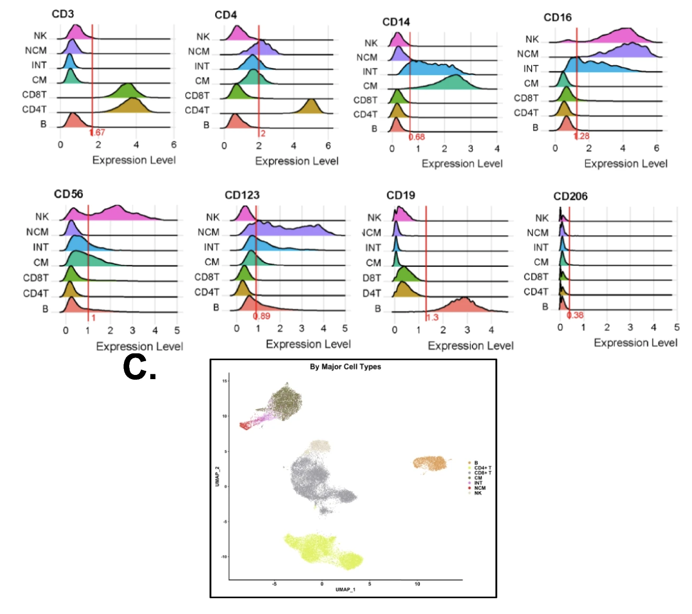

About Me
Hello! I'm Sujit Silas, a computational biologist with close to five years of experience in the field. I have a robust research track record and exceptional analytical skills, which have helped contribute to various projects at the intersection of biology and informatics.
I'm currently pursuing a Master's degree in Bioengineering at the Henry Samueli School of Engineering, UCLA, where I also serve as a Graduate Student Researcher (GSR) at the Allard Laboratory. My research focuses on transgenerational toxicity, leveraging matrix factorization methods to uncover new insights.
In the summer of 2024, I interned at GRAIL as a Computational Biology and Machine Learning Scientist, investigating false positives and developing advanced visualization tools to improve interpretability in DNA methylation analysis.
Prior to my master's, I worked as a Bioinformatics Specialist at the La Jolla Institute for Immunology, where I led bioinformatics initiatives under the mentorship of Klaus Ley, MD. I analyzed a wide range of next-generation sequencing datasets to identify genetic markers in inflammatory diseases, with efforts focused on standardizing and optimizing pipelines, contributing to over 10 high-impact publications.
I am committed to utilizing my expertise to drive meaningful advancements in the life sciences. I welcome collaborations and opportunities to delve further into this captivating realm. Let's connect and explore the endless possibilities together!
Research Interests
- Computational Biology: single-cell genomics, proteomics, cancer genomics, immunogenomics, methylation biology
- Machine Learning: deep learning, modality transformation, featurizaton
News
- [Sep. 2024] Successfully completed my internship at GRAIL!
- [Jun. 2024] Started my comp bio / ML internship at GRAIL
- [Mar. 2024] Presented a poster the UCLA JCCC Annual All-Center Symposium
- [Feb. 2024] Presented a poster the UCLA BIOE conference
- [Oct. 2023] Appointed as a GSR at UCLA
- [Sep. 2023] Started my MS in Bioengineering at UCLA
- [Jul. 2023] Left my position as a Bioinformatics Specialist at LJI
- [Jul. 2021] Accepted offer to work as a Bioinforamtics Specialist at LJI
- [Mar. 2021] Graduated with a BS in Biology with Honors from UCR
Past Work
-

Sujit Silas Armstrong Suthahar, Felix Sebastian Nettersheim, Ahmad Alimadadi, Erpei Wang, Monica Billitti, Natalya Resto-Trujillo, Payel Roy, Catherine C Hedrick, Klaus Ley, Marco Orecchioni
-

Payel Roy†, Sujit Silas Armstrong Suthahar†, Jeffrey Makings, Klaus Ley
-

Shreeram Athreya, Andrew Melehy, Sujit Silas Armstrong Suthahar Vedrana Ivezic, Ashwath Radhachandran, Vivek Sant, Chace Moleta, Henry Zheng, Maitraya Patel, Rinat Masamed, Corey W. Arnold, William Speier
-

Antoine Freuchet†, Payel Roy†, Sujit Silas Armstrong, Mohammad Oliaeimotlagh, Sunil Kumar, Marco Orecchioni, Amal J. Ali, Amir Khan, Jeffrey Makings, Qingkang Lyu, Holger Winkels, Erpei Wang, Christopher Durant, Yanal Ghosheh, Rishab Gulati, Felix Nettersheim, Klaus Ley
-

Jenifer Vallejo, Ryosuke Saigusa, Rishab Gulati, Sujit Silas Armstrong Suthahar, Vasantika Suryawanshi, Ahmad Alimadadi, Christopher P. Durant, Yanal Ghosheh, Payel Roy, Erik Ehinger, Tanyaporn Pattarabanjird, Klaus Ley